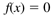
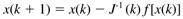
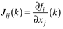
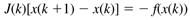

| [ Team LiB ] |
|
Appendix 2.1: Solving Algebraic EquationsFortunately, the MATLAB fsolve function is easy to use for solving algebraic equations. For a simplified presentation, we use the form  obtained from Equation (2.66) with a fixed p and u. The most commonly used numerical techniques are related to Newton-Raphson iteration. The "guess" for iteration k + 1 is determined from the value at iteration k, using  where f[x(k)] is the vector of function evaluations at iteration k, and J(k) is the Jacobian matrix  The ij element of the Jacobian represents the partial derivative of equation i with respect to variable j. If analytical derivatives are not available, elements of the Jacobian are obtained by perturbation of the state variable, requiring n + 1 function evaluations for an n-equation system of equations. Various quasi-Newton techniques provide approximations to the Jacobian and do not require as many function evaluations, reducing computational time. In practice, the Jacobian matrix in Equation (A.2) is not inverted. Rather, a set of linear algebraic equations is solved for x(k+1),  In this text we do not focus on the solution of algebraic equations. See the text by Bequette (1998) for more details on these techniques. |
| [ Team LiB ] |
|